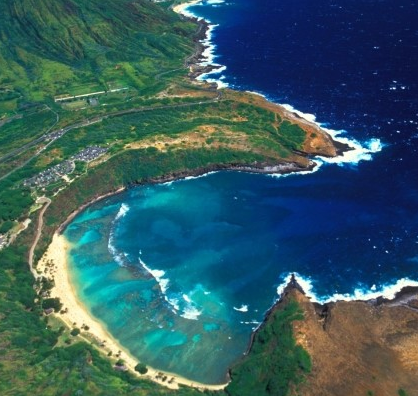
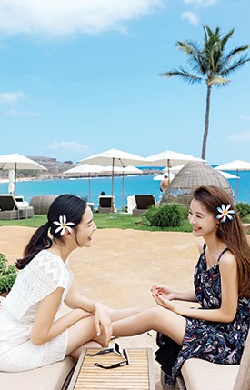

Hawaii Beach Top 5
- 1

Hanauma Bay, Oahu
예쁜 초승달 모양의 해변이다. 산호초가 거친파도를 막아주기 때문에 스노쿨링 장소로 제격!
Detail View - 2
Lanikai Beach, Oahu
새하얀 모래사장 눈부시게 푸른바다! 천국의 해변이라 불리운다. 쌍둥이 모쿠루아 섬을 볼 수 있다.
Detail View - 3
Kapalua Beach, Maui
마우이섬 북단의 대표적인 해변가! 때때로 거북이도 등장하는 작지만 아름다운 해변
Detail View - 4
Ka'anapali Beach, Maui
웨스트마우이섬의 대표적인 해변으로 약5km에 이르는 백사장에 유명한 해변
Detail View - 5
Hanaley Bay Beach, Kaua'i
하와이에서도 손꼽히는 예쁜 해변! 에메랄드 빛 산과 폭포도 만날 수 있다.
Detail View
Heaven is here!
CONTINUE THE ADVENTURE
Living in the momentin the HAWAIIAN ISLANDS
FACEBOOK FOLLOWER
Like! Click now242,597명이 이 페이지를 팔로우하고 있습니다.
- jinah choi
- jinah choi
- jinah choi
- jinah choi
- jinah choi
- jinah choi
- jinah choi
- jinah choi
- jinah choi
- jinah choi
TRENDY HOTEL
HILTON HAWAIIAN VILLAGE WAIKIKI BEACH RESORT2012년 미국에서 두 번째로 좋은 해변으로 선정된 듀크 카하나모쿠 비치에 위치한 힐튼 하와이안 빌리지는 와이키키 최대의 리조트 호텔이다. 18개가 넘는 레스토랑과 라운지를 보유하고 있으며 90개의 숍과 부티크가 자리하고 있다. 섬에서 가장 큰 '수퍼 풀'을 포함해 총 5개의 수영장이 있으며, 매주 금요일 저녁에는 화려한 불꽃놀이로 하와이의 밤을 아름답게 수놓는다.
Detail ViewBEST RESTAURANT
Mama's Fish House트립 어드바이저 TOP10 레스토랑에 랭크되어있으며 오픈 테이블 선정 미국내 2번째로 인기가 많은 레스토랑
Detail View Mai Tai Roa Ae $18
Mai Tai Roa Ae $18
타히티 말로 최고라는 뜻의 하와이 대표 칵테일! 하와이에 오시면 꼭 마셔봐야할 칵테일 마이타이
ACTIVITY
하와이 스노클링한국에서 즐기던 스노클링과는 비교할 수 없는 매력의 하와이 스노클링! 온갖 형형색색의 열대어들을 만날 수 있다. 어린 자녀가 있는 분들에게 추천해드리는 스노클링 포인트로는 코올리나 라군, 청소년이나 성인 자녀와 함께 하와이 가족여행을 오신 분들께 추천하는 스노클링 스팟으로는 하나우마 베이를 추천!
Detail View-
지도로 보는 오아후, 하와이 아일랜드
에이비로드 2016-12-16
★★★★★
관광과 식도락의 천국 오아후는 하와이에서 세번째로 큰 섬, 하와이 인구의 80% 이상이 살고 있다. 청명한 하늘과 따듯한 바람, 비키니와 선글라스 차림으로 해변을 활보하는 사람들, 서핑보드에 몸을 싣고 파도를 즐기는 서퍼 등 여행자에게 오아후는 완벽에 가까운 파라다이스다.
- 
박진희와 윤소이의 쉼표
여성중앙 2016-12-16
★★★★★
절친한 사이로 알려진 두 여배우, 박진희와 윤소이가 우정여행을 떠났다. 두사람이 선택한 곳은 하와이의 여섯개 섬 가운데 가장 작은 '라나이'다. 사람들에게 잘 알려지지 않은 곳, 누구의 방해도 없이 충분히 쉴 수 있으면서 모처럼 둘만의 여행이니 이왕이면 특별한 장소이길 바랬던 두사람. 그 이야기가 펼쳐진다.
 무지개 따라 하와이 드라이브 여행
에이비로드 2016-12-16
★★★★★
무지개 따라 하와이 드라이브 여행
에이비로드 2016-12-16
★★★★★
하와이 여행을 하는데 렌터카는 매우 중요한 교통수단. 다른 섬과는 달리 오아후엔 더 버스나 트롤리 같은 대중교통 수단이 있지만 노선이 복잡하고 운행시간이 제각각이라 렌터카가 훨씬 편리하다. 시원하게 잘 닦인 도로 덕분에 운전하기도 쉽다. 오아후 렌터카 여행의 모든것을 살펴봤다.
-
가족여행자가 하와이에서 해야할 20가지
에이비로드 2016-12-16
★★★★★
일곱살 아들과 네살배기 딸. 두 아이에게 특별한 추억을 만들어주고 싶은 엄마 아빠가 하와이 여행을 결심했다. 하와이의 꽃인 오아후를 거쳐 대자연의 신비를 느낄 수 있는 하와이 아일랜드. 처음 찾은 하와이에서 이들 가족이 잊지말고 해야할 20가지를 제안했다.